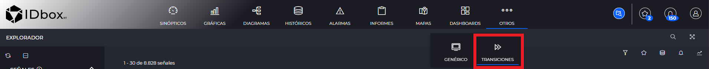
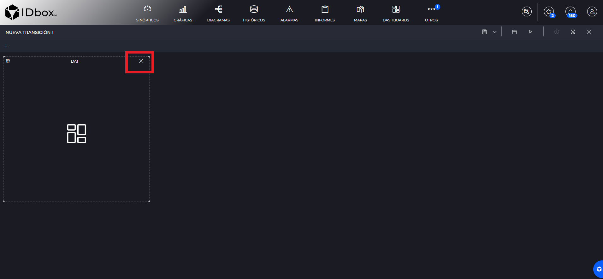

TRANSICIONES
- 1 Introducción
- 2 Editor
- 3 Visor
1. Introducción
Las transiciones nos permitirán crear animaciones de documentos, de manera que en un mismo documento visualicemos n documentos, altertando el documento que se está mostrando actualmente.
Se pueden crear desde la sección de accesos directos en otros. Al pulsar en esta opción se nos abrirá un nuevo documento de transición.

2 Editor
El editor de dashboards consiste en una rejilla que nos permitirá añadir elementos a una transicón, eliminarles o modificarles.
Mediante el botón guardar de la barra de herramientas podremos guardar el documento.
2.1 Añadir y eliminar elementos
Para añadir un elemento pulsaremos sobre el botón de transiciones.
Esto nos abrirá el selector de documentos. Una vez añadido el documento deseado, se mostrará en la rejilla de documentos.
Para eliminar un elemento de transiciones pulsaremos sobre el aspa del elemento.

2.2 Mover elementos
Podemos pinchar en un elemento y mantener pulsado para arrastrarle a otro posición. Se indica en un color más oscuro el lugar donde se posicionará el elemento en el momento que se suelte el click izquierdo. Además si hay otros elementos en el camino, estos se moverán automáticamente para dejar espacio al nuevo elemento.

2.3 Opciones de configuración
Pulsaremos sobre el botón de configuración en un elemento y se nos abrirá un panel derecho con las opciones que podemos modificarle.

Las opciones son las siguientes:
- Duración de la animación: hace referencia a el tiempo que durará la animación de la transicón.
- Tipo de animación: podemos elegir entre los siguientes tipos de animación, se especifica en segundos.
- Ninguna.
- Aparecer.
- Aparecer desde abajo.
- Mover a la izquierda.
- Mover a la derecha.
- Tiempo de pantalla: indica el tiempo que se mostrará en pantalla el documento, se especifica en segundos.
3 Visor
A la hora de abrir un documento de transiciones o pulsar en el botón de “Vista Previa” de la barra de herramientas del editor. Visualizaremos el documento de transiciones en modo visor, con los elementos que hayamos puesto y su configuración.